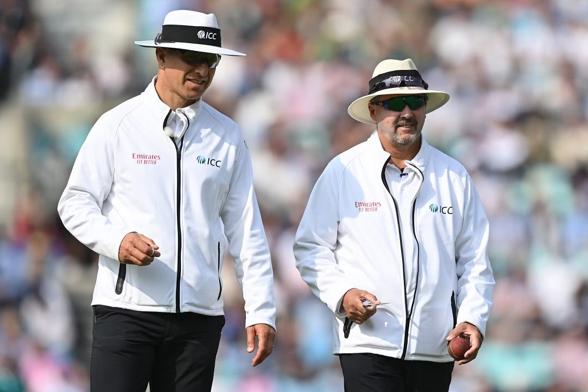

Shakib said he would score the fastest Test hundred: Papon
Bangladesh Cricket Board (BCB) president Nazmul Hassan Papon revealed on Wednesday that Test skipper Shakib Al Hasan told him that he would go on to score the fastest Test hundred by a Bangladesh batter ahead of the start of the second day of the lone Test against Ireland at the Sher-e-Bangla National Cricket Stadium in Mirpur.
Soft signal scrapped as ICC reveals major change to playing conditions
ICC have announced a major change to the Playing Conditions, among other tweaks, effective June 1, 2023.The major change involved the soft signal being scrapped, with umpires no longer required to give a soft signal when referring decisions to the TV umpire. "The on-field umpires will consult with the TV umpire before any decisions are taken," the ICC confirmed.